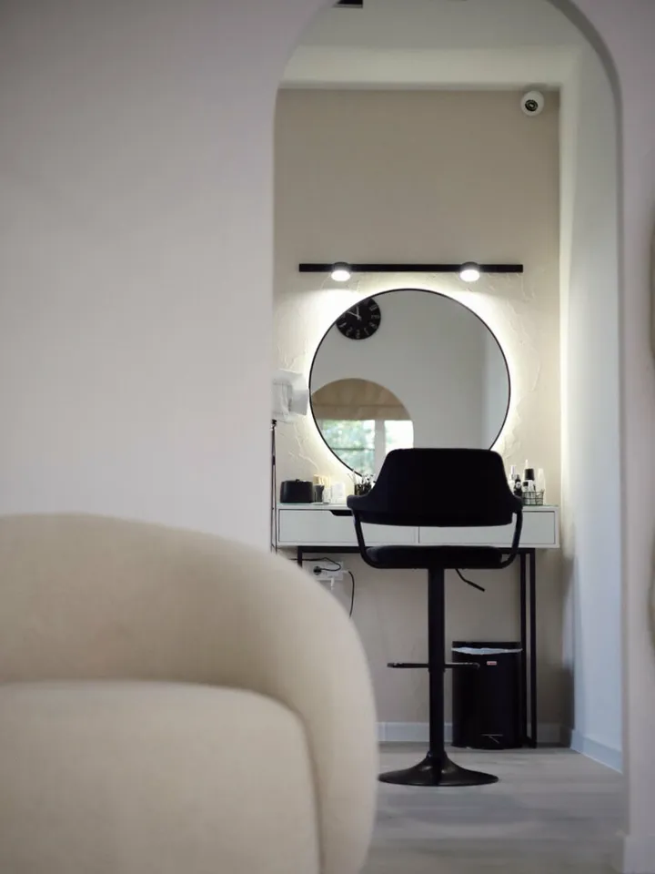
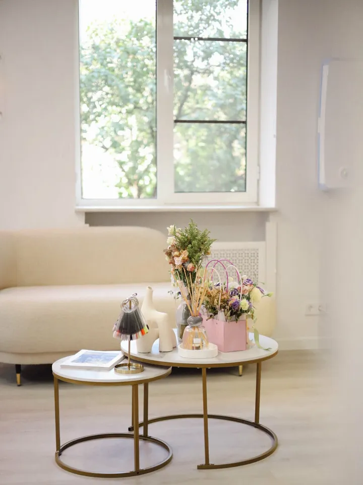
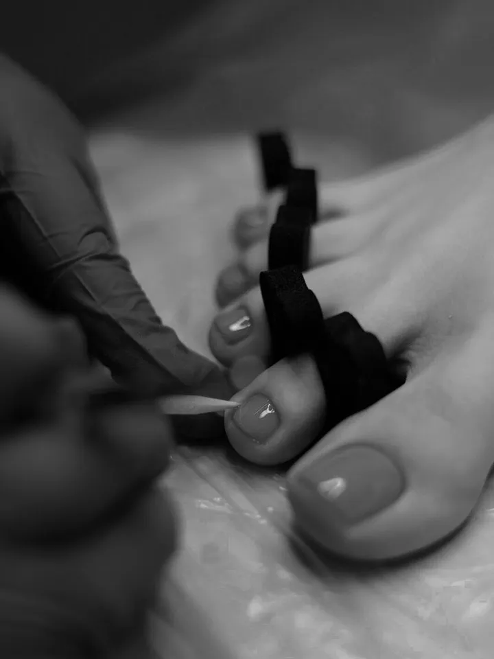
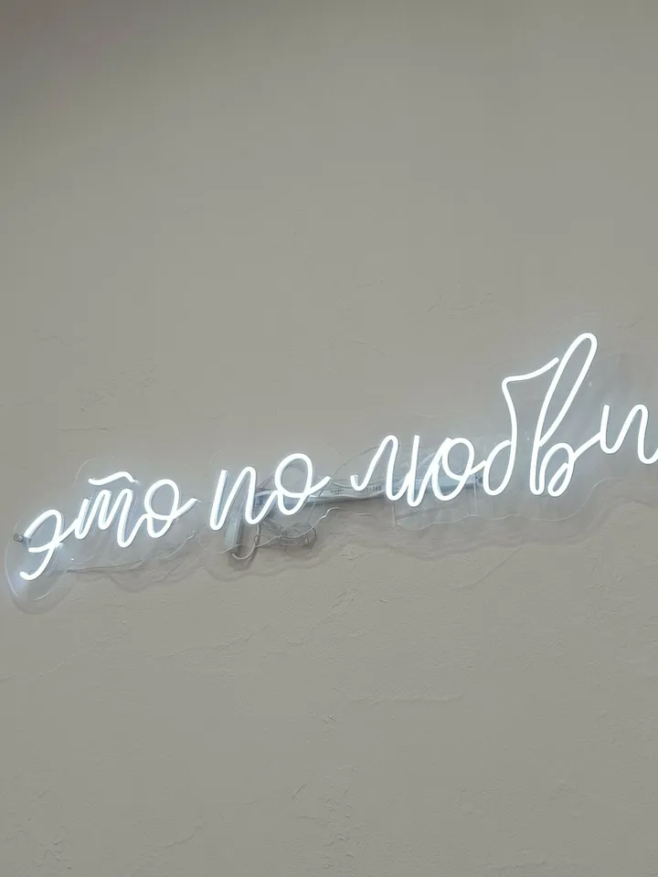
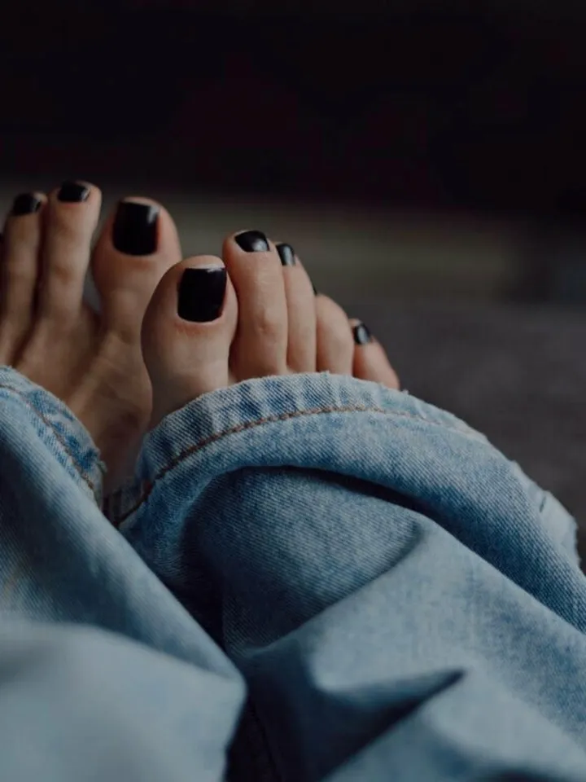
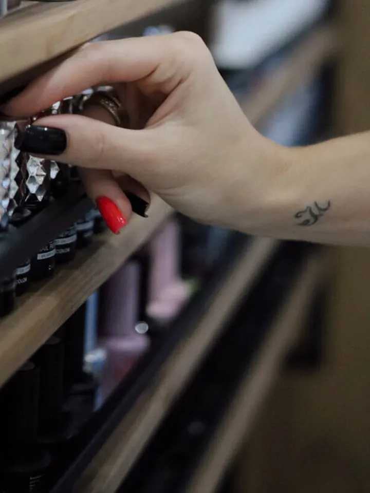

ГудЛак · ногтевая студия в центре Волгограда

Волгоград, ул. Мира, 20 · маникюр, педикюр, брови и ресницы
Ежедневно 10:00–22:00 по записи
О студии
«Гуд Лак» – светлая уютная студия на улице Мира, в центре Волгограда. Многие гости возвращаются к нам снова и знают своих мастеров по именам.
Мы работаем бережно и аккуратно и внимательно относимся к обработке инструмента. Пока мастер занят вашими ногтями, администратор предложит кофе или другой напиток.
- Маникюр, педикюр, брови и ресницы в одной студии
- Кофе и напитки во время визита
- Оплата картой или наличными, Wi‑Fi
- Запись по телефону, часто на ближайшие дни





Услуги
Маникюр
Аккуратный маникюр с покрытием, японский уход, укрепление и наращивание, дизайн на любое настроение.
Педикюр
Уход за пальчиками и стопой, с покрытием или в натуральном виде. Расслабляющий массаж – приятное завершение процедуры.
Брови и ресницы
Архитектура и окрашивание бровей, долговременная укладка, наращивание и ламинирование ресниц. Мастер подберёт форму под ваше лицо.
Актуальные цены и свободное время – у администратора по телефону.
Позвонить +7 996 509-89-89
Отзывы
Отличное место, вежливый персонал, мастер молодец всё сделала аккуратно, место положение удобное, можно записаться на ближайшие дни, а не ждать очереди неделями, рекомендую
Anastasia · 2ГИС, 16.06.2026 Салон «ГудЛак» открыла для себя 4 года назад и хожу сюда на постоянной основе! Заботливые и вежливые администраторы, всегда предложат во время процедуры напитки. Салон очень уютный…
Полина · Яндекс Карты, 22.07.2026 С самого входа ощущается уютная атмосфера: чисто, красиво и очень комфортно. Мастера внимательные и аккуратные, работают профессионально…
Алена · Яндекс Карты, 12.04.2026
Отзывы гостей с карточек студии на 2ГИС и Яндекс Картах, многоточие означает сокращение.
Как нас найти
- Адрес
- Волгоград, ул. Мира, 20, Центральный район
- Часы работы
- Ежедневно 10:00–22:00, по предварительной записи
- Телефон
- +7 996 509-89-89
- ВКонтакте
- vk.ru/goodlak_vlg
Волгоград, ул. Мира, 20